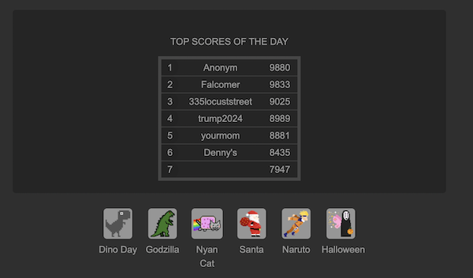

With regards to the interface design, this website is very simple and focuses on its core game. The top has the game and simple instuctions to start the game. However, the UI could definitely use some work to amp the visual aesthetics of the page. Lastly, the overall experience is positive. Takes a little to tinker around and see what each thing does on the website.
What I really like from this website is how it added a leaderboard for players to challenge themselves and to spotlight those who have done a good job! Additionally I like the customizability of the character you are using to jump over the obstacles.
This game has a loading screen, and overall has a higher more intuitive user experience as the whole website this game is hosted on revolves around showcasing games. The game is front and middle with the instructions right at the bottom of the game. I wonder if the instruction should be on top, and if so, what would it add or take away from the overall experience? It took me a little while to understand the mchanics of the game, so maybe the instruction scould have helped rather than the game being firest (since I just started playing). Lastly, I don't think there is a mute feature in the game: I had to control the audio with my computer. If I were to add audio, I'll add controls withing the screen to control this individually.